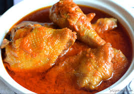

Nigerian Stew

This is a popular dish in the Nigerian population made with either fish or meat
It is popularly eaten with rice, fried plantain and Yam.
Ingredients
- 8 cup Nigerian pepper mix
- stock cube
- 1 tsp Curry
- 1tsp Thyme
- 18 pieces hard chicken
- 2 medium onion chopped
- 1 tsp ginger powder
- 1/2 tsp thyme
- 2 cup of vegetable oil
- 1 cup chicken broth
Steps
- Season your Chicke with stock cube, curry and thyme, 1 medium chopped onion
- Add seasoned chicken to pan to broil fro 15 min, after 15 min add water and cook for another 15 min
- Pan fry or roast the broiled chicken
- Fry remaining chopped onion in 3 tablespoon of oil and add the Nigerian pepper mix and chicken then cook for 3o min
- Continue cooking untill the oil have separated. Then serve
Back To Main Menu